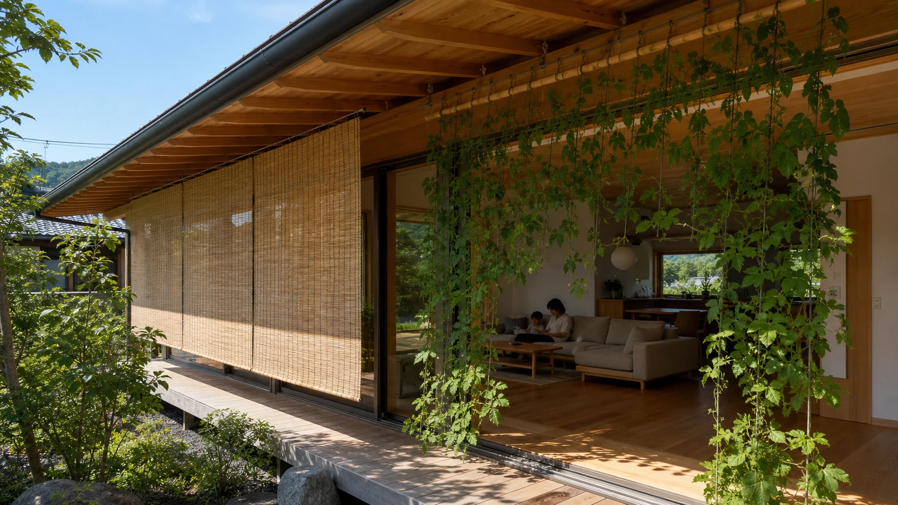
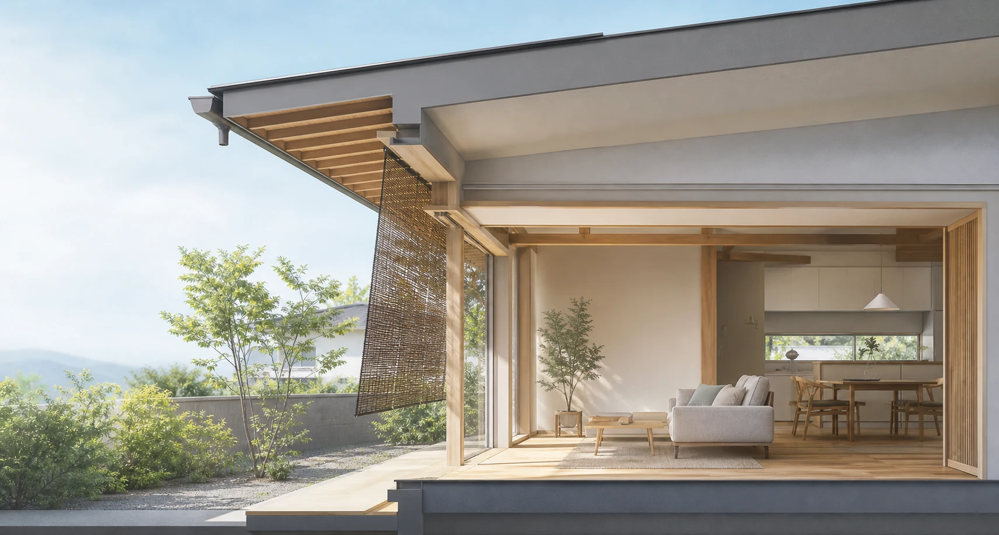
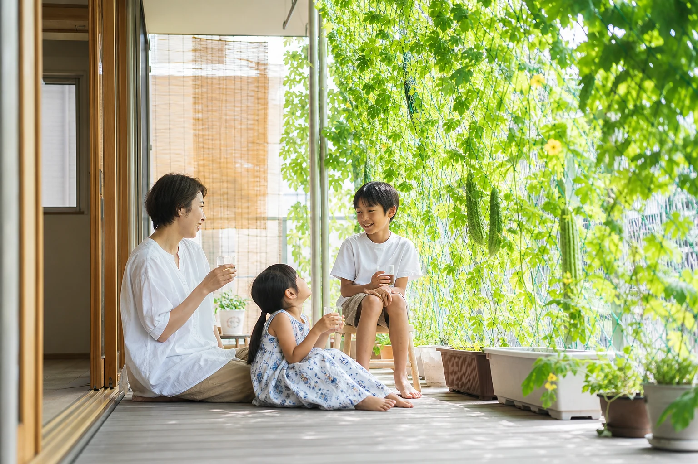
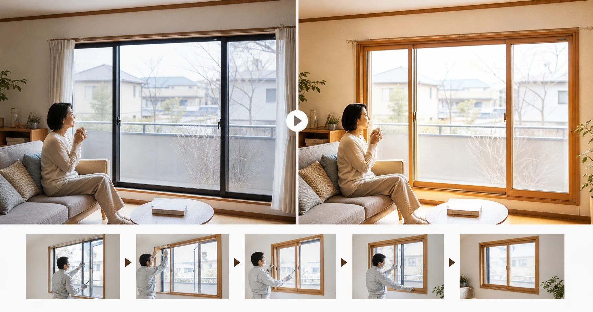

8月、連日の猛暑で熱中症への警戒が呼びかけられています。お盆で実家に帰省する方も多い季節。今回は「夏を涼しく、心地よく暮らす家」を入り口に、一年を通じた住まいの快適さを考えます。日本人が磨いてきた涼しく暮らす知恵と、年間を通じて室温を安定させる現代の断熱・気密、そして夏に欠かせない日射対策。季節ごとの工夫をどう組み合わせるか、700年前の随筆家の言葉を手がかりに見ていきましょう。
1. 700年前の家づくり哲学――「夏をむねとすべし」
兼好法師『徒然草』第55段は「家の作りやうは、夏をむねとすべし。冬は、いかなる所にも住まる。暑き比わろき住居は、堪へ難き事なり」と説きます。ただし、現代の答えは夏か冬かの二者択一ではありません。断熱・気密は冬限定の対策ではなく、外気の影響と冷暖房のロスを抑える年間の基本です。そのうえで夏は、軒・すだれ・外付けブラインドなどで強い日射を室内に入れない対策を組み合わせます。「夏をむねとすべし」は夏を優先する結論ではなく、冬の寒さだけでなく夏の暑さにも目を向けようという問いかけとして受け止めるのが適切です。

2. 昔ながらの知恵は、理にかなっている
すだれ・よしず・緑のカーテン――日差しは室内に入る前に、窓の外側で遮るのが正解です。十分に茂った緑のカーテンは日射熱の約80%をカットし、表面温度が壁面より約5.3℃低かった測定例もあります。打ち水は「気化熱」というひんやりの正体。朝か夕方、日陰にまくのがコツです。風の通り道は、部屋の対角線上にある窓を2か所開けるのが基本。ただし通風が効くのは外気が涼しいときだけ。猛暑日は迷わず冷房に切り替えましょう。
3. 昔の知恵を、現代の技術で「アップデート」する
夏、家に侵入してくる熱の約7割が窓から入るといわれます。Low-E複層ガラスは、特殊な金属膜で熱の出入りを抑える複層ガラスです。製品の仕様に応じて夏の日射熱を抑え、冬は室内の熱を逃がしにくくします。内窓（二重窓）は工事が比較的手軽で、省エネ改修の補助制度の対象になることも。外側のすだれや緑のカーテンで夏の日射を遮り、Low-E複層ガラスや内窓で年間の断熱性を高める――昔の知恵と現代の技術は対立せず、組み合わせて使えます。

4. 涼しい家は、命を守る家――「屋内熱中症」という現実
総務省消防庁のデータによると、熱中症で救急搬送された人の発生場所は例年「住居」が最多。2025年（5〜9月）の速報でも住居が約38%で最多、搬送人員の約57%が高齢者でした。すだれや断熱は「エアコンを我慢するため」のものではありません。厚生労働省・環境省も、暑いときは我慢せずエアコンを使うよう呼びかけています。すだれや断熱は、冷房の効率を高め電気代と体への負担を減らすためのもの、と位置づけましょう。

2027年4月から家庭用エアコンの省エネ基準（トップランナー基準）が引き上げられる、いわゆる「2027年問題」もあります。これはメーカーの出荷製品全体に関する基準で、現在使っているエアコンが使用禁止になる制度ではなく、引き続き使えます。一方、故障や使用年数を踏まえて買い替える際は、本体価格だけでなく通年エネルギー消費効率（APF）や年間電気料金の目安も比べましょう。省エネ性能の高い機種は光熱費の削減が期待できるため、購入費用と使用期間全体の費用を合わせて選ぶのが合理的です。お盆の帰省では、親御さんの家のエアコンが動くか、暑い部屋で我慢していないかも確認してください。
よくある質問
すだれは、窓の内側と外側どちらに掛けるべき？
＋
断然、外側です。日差しはガラスを通ると室内で熱に変わるため、室内に入る前に外で遮るのが効果的です。
緑のカーテンは、どのくらい涼しくなりますか？
＋
十分茂った緑のカーテンは日射熱の約80%をカットし、表面温度が壁面より約5.3℃低かった測定例があります。ただし効果は生育状況や環境で変わります。
打ち水は、いつまけば効果的？
＋
真昼の炎天下は避け、朝か夕方、できれば日陰にまくのがコツ。水がゆっくり蒸発するぶん気化熱による涼しさが長持ちします。
窓の断熱リフォームは、何が手軽ですか？
＋
既存の窓の内側に一枚足す内窓（二重窓）が、工事が比較的手軽で人気です。省エネ改修の補助制度の対象になることもあります。
エアコンは電気代が心配で、なるべく我慢したいのですが。
＋
我慢は禁物です。熱中症の搬送は「住居」での発生が最多で、高齢者が過半を占めます。すだれや断熱は"冷房の効率を上げるため"のものと考えてください。
エアコンの「2027年問題」って何ですか？
＋
2027年4月から家庭用エアコンの省エネ基準が引き上げられます。現在使っている機器が使用禁止になる制度ではなく、引き続き使えます。買い替える際は、省エネ性能と光熱費削減効果も含めて総合的に選びましょう。
出典・参考資料を見る
- 吉田兼好『徒然草』第55段
- 環境省「熱中症予防情報サイト」（2026年）
- 環境省「まちなかの暑さ対策ガイドライン」（2024年）
- 一般社団法人日本建材・住宅設備産業協会「省エネ建材等級表示」（2026年参照）
- 総務省消防庁「令和7年（5月～9月）の熱中症による救急搬送状況」（2025年）
- 資源エネルギー庁「27年4月からエアコンの新たな省エネ基準がスタート！エアコンについて知っておくべきポイントは？」（2026年）

この記事を書いた人｜エイスケ
1986年生まれ、40歳。実家の建築業・不動産に10年間従事したのち、教育の世界へ。住宅と教育、両方のプロの視点から「豊かな暮らし」をテーマに忖度なく切り込みます。※本コラムは筆者個人の見解・経験に基づくものです。最終的な判断は各分野の専門家にご相談ください。